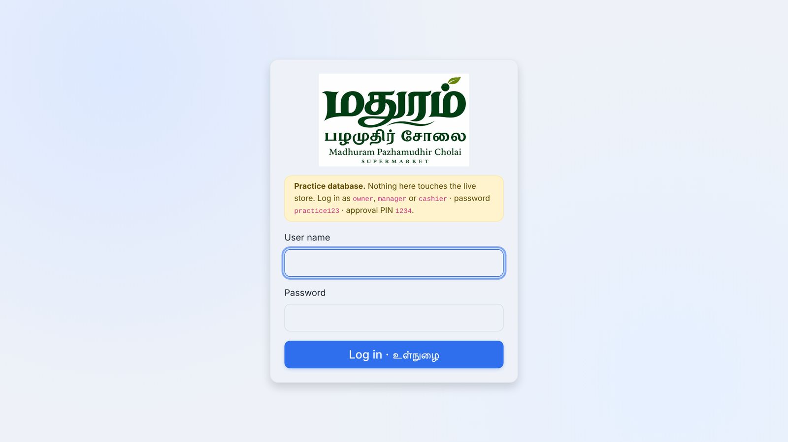

Log inஉள்நுழைவு

English
- Double-click Madhuram Store on the desktop. The billing window opens by itself.
- Type your own user name and password and press Enter. Capital letters in the user name do not matter.
- Never use another person's login: every bill, discount and refund is recorded with the name of the person logged in.
- Five wrong tries lock the login for 15 minutes. Owner forgot the password? Double-click Reset_Owner_Password in the program folder.
தமிழ்
- டெஸ்க்டாப்பில் உள்ள Madhuram Store ஐ இருமுறை கிளிக் செய்யவும். பில்லிங் சாளரம் தானாகத் திறக்கும்.
- உங்கள் சொந்த பயனர் பெயர், கடவுச்சொல்லை உள்ளிட்டு Enter அழுத்தவும். பெயரில் பெரிய/சிறிய எழுத்து வேறுபாடு இல்லை.
- மற்றவரின் உள்நுழைவை ஒருபோதும் பயன்படுத்த வேண்டாம்: ஒவ்வொரு பில், தள்ளுபடி, பணத் திருப்பமும் உள்நுழைந்தவரின் பெயரில் பதிவாகும்.
- ஐந்து முறை தவறாக உள்ளிட்டால் 15 நிமிடம் பூட்டப்படும். உரிமையாளர் கடவுச்சொல் மறந்தால்: நிரல் கோப்புறையில் Reset_Owner_Password ஐ இருமுறை கிளிக் செய்யவும்.